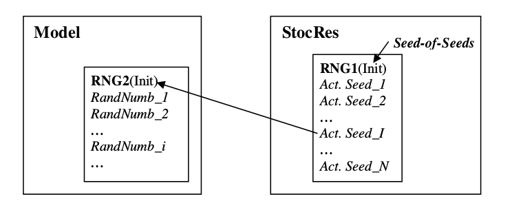
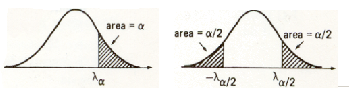
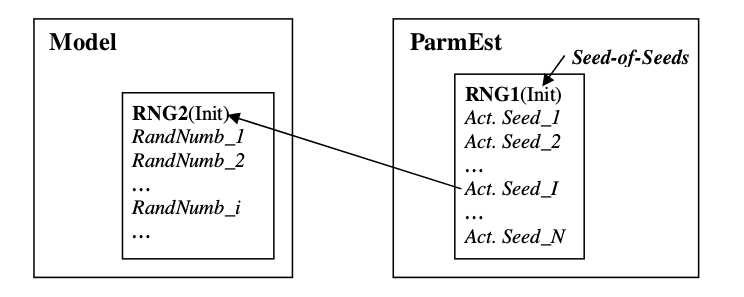

Below
Above
CSLUMP
No. data: 3
2014-01-01
Histo.
P.d.f.
Longname for Var1
Longname for Var2
2014-01-01
Copy and paste a model URL here
e.g. http://insightmaker.com/insight/14157
About StochSim
StochSim version:
using Insight Maker version:
StochSim is an extension to Insight Maker for Stocastic System Dynamics models.
StochSim has the following facilities for IM models:
Optim - A simplex optimiser.
Sensi - A sensitivity analyser.
StatRes - For running a stochastic IM model N times, performing statistical analysis and presentation.
Parmest - Parameter estimation for stochastic IM models.
Send Seed Help
By the Send Seed device you will make the study (including many simulations) of a stochastic model reproducible.
Checking the Send Seed box opens a sub-frame that contains two text fields. In the first,
named Seed-of-Seeds, you can specify a single integer number (default 123) that will generate a seed (Actual Seed)
for each simulation run. The Actual Seed is sent to the model before a new simulation run.

Confidence Level Help
STATISTICS
After N simulations statistics can be calculated:
Avg = M = ∑(X1...XN)/N.
StdDev. = s = √∑[(Xi-M)(Xi-M)] / (N-1).
Choose 1-sided or 2-sided conf intervals.
Confidence limits for the mean are set by 1-α (e.g. 90%, 95%, etc.)
The corresponding λ (= λα or λα/2) is then calculated (see Figure).
Confidence limits around the SYSTEM mean estimate are calculated using
the Normal approximation. (This requires at least N=20 simulations.)
The Confidence Interval is then:
1-sided
C.I. = x < M + λα*s/√N Or x > M - λα*s/√N
2-sided
C.I. = (M - λα/2*s/√N , M + λα/2*s/√N)
(Note: You can reduce C.I. by increasing the number of simulations.)

SkipOnCondition Help
Checking the SkipOnCondition box enables you to use a variable with the name “SkipOnCondition”
that must be included as a variable in the model. If this variable is TRUE at
the end of a simulation run the whole simulation run will be skipped
and replaced by a new run. This is handy if you for some reason want
to exclude certain simulation runs, e.g. where nothing of interest happens.
The number of skipped runs will also be shown.
The variable named SkipOnCondition can e.g. have the condition:
[Quantity] < 0.5
SkipOnCondition Help
Checking the SkipOnCondition box enables you to use a variable with the name “SkipOnCondition”
that must be included as a variable in the model. If this variable is TRUE at
the end of a simulation run the whole estimation round will be skipped
and replaced by a new esimation round. This is handy if you for some reason want
to exclude certain simulation runs, e.g. where nothing of interest happens.
The number of skipped estimation rounds will also be shown.
The variable named SkipOnCondition can e.g. have the condition:
[Quantity] < 0.5
StatRes is a tool for collection of end-point results from N simulations
and for statistical analysis of these results.
Quantities to be studied (e.g. Stocks, Flows, Variables, Differences and
cumulated quantities) have to be modelled so their
resulting values can be transferred to StatRes after each run.
StatRes will calculate: Average, Standard Deviation, Confidence Interval,
Min, Max, and Percentiles.
The Confidence Level for the Conf. Int. can be specified as well as 1 or 2-sided intervals.
(Default is 95% and 2-sided interval.)
The Percentile can also be specified. (Default: 50% (Median).)
To use the StatRes module you have to:
1. Build or load an Insight Maker model.
2. Specify and Add the names of the quantities to be studied.
[3. Specify the Level for the Confidence Interval & 1 or 2-sided.]
[4. Specify the Percentile.]
5. Specify the number of Requested Simulations (Default=100).
6. Press the Run button.
( NOTE: Only write in Yellow fields.)
During a parameter estimation round, the parameters in the model are tuned
during a large number of simulation runs. It is then important that the stochastic
model behaves the same during all simulations in this round. This is accomplished by using the
same Seed-of-Seeds in the model.
For the next parameter estimation round a new Actual Seed is required. This means that
we for N parameter estimation rounds will need N Actual Seeds. ParmVar therefore has its
own random number generator (RNG1) that delivers these N Actual Seeds to the model's
RNG2. ParmVar’s generator is initiated by a single Seed-of-Seeds (default value 123).

1. Build or load an Insight Maker model.
2. Specify and Add the Parameters:
a. Name the Parameter.
b. Specify starting values of the parameter.
c. Specify edge size of the initial simplex in the parameter’s direction.
d. Press Add.
3. Enter the Name of the Objective Function.
4. Select Minimise or Maximise. (Default=Minimise)
5. Enter Requested Accuracy.
(When Actual Accuracy calculated as: |Vbest - Vworst| becomes smaller
than Required Accuracy Optim will terminate. Here V symbolises the
Objective Function.)
[ 6. Enter Maximum Number of Iterations (Default=200). ]
[ 7. Lock Seed is only required for a stochastic model (i.e. a model using
[ random numbers). The Seed can then be chosen and locked from Optim. ]
8. Press the Optimise button.
[ 9. When ended, the optimisation may be continued after ]
[ change of Max Iterations or Required Accuracy. ]
[ You may also Halt and/or Reset the optimisation. ]
10. The Print button prints the Optim form as shown.